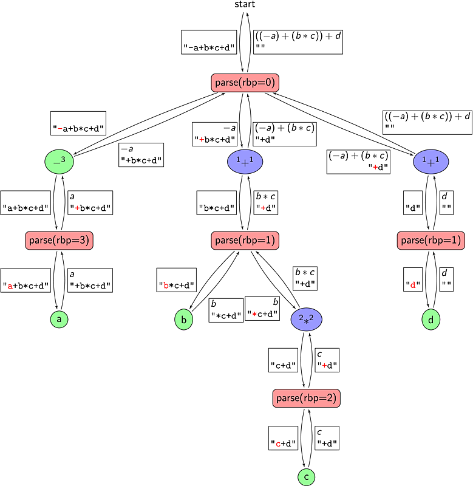

module type BASE_PARSER = sig
type t
val int_handler: int → Token.Stream.t → t
val ident_handler: Token.ident → Token.Stream.t → t
end
type left_binding_power = int
type right_binding_power = int
type left_binding_power_provider = (Token.With_info.t → left_binding_power)
let left_binding_powers:(Token.keyword, left_binding_power_provider) Hashtbl.t
= Hashtbl.create 17
let left_binding_power token =
match token.token with
∣ Token.Keyword(kwd) →
(try let f = Hashtbl.find left_binding_powers kwd in
f token
with Not_found → 0)
∣ _ → 0
type prefix_handler = Token.Stream.t → Base_parser.t
let prefix_handlers:(Token.keyword,prefix_handler) Hashtbl.t =
Hashtbl.create 17
let prefix_handler {token} stream =
let fail() =
Log.Parser.raise_user_error "‘%s’ cannot be used in prefix position."
(Token.to_string token) in
match token with
∣ Token.Keyword(kwd) →
(try ((Hashtbl.find prefix_handlers kwd) stream)
with Not_found → fail())
∣ Token.Int(n) → Base_parser.int_handler n stream
∣ Token.Ident(id) → Base_parser.ident_handler id stream
∣ Token.Float(n) → failwith "Floats not yet handled"
∣ Token.String(s) → failwith "Strings not yet handled"
∣ Token.End → fail()
type infix_handler = (Token.Stream.t → Base_parser.t → Base_parser.t)
let infix_handlers:(Token.keyword,infix_handler) Hashtbl.t =
Hashtbl.create 17
let infix_handler token left =
let fail() =
Log.Parser.raise_user_error "‘%s’ cannot be used in infix position."
(Token.to_string token.token) in
match token.token with
∣ Token.Keyword(kwd) →
(try ((Hashtbl.find infix_handlers kwd) left)
(∗ This error cases can only happen only if a token has a
non-zero lbp, but its infix handler is not defined. ∗)
with Not_found → fail())
∣ _ → fail()
rbp: all
infix tokens with a left binding power strictly greater than
rbp are part of the current call to parse; other
tokens are not. To understand how this works, we put here the stack of calls
to parse on the "-a+b*c+d" example. We write parse_i for the
ith invocation of parse. We write Ei or (E)i when the
expression is created by i.

parse_1 with a right binding
power of 0, with the expression "-a+b*c+d" (1st invocation of
parse in the stack).parse_1 finds "-" in prefix position. The function
associated to "-" calls parse_2 3 "a+b*c+d"parse_2 finds "a" in prefix position. The left binding
power of "+" is 1 < 3, so parse_2 returns a2.
The "-" handler returns (− a2)−parse_1
continues with "+" in infix position, passing (− a2)− to the
"+" handler. The "+" handler then calls parse_3 1 "b*c+d"parse_3 finds "b" in prefix position. The left binding
power of "*" is 2 > 1, so parse_3 continues with "*"
in infix position, passing it b3. "*" calls parse_4 2
"c+d"parse_4 finds "c" in prefix position. The left binding
power of "+" is 1 < 2, so parse_4 returns c4. The
"*" handler returns with (b3 * c4)*. parse_3 returns (b3 * c4)*,3. The "+" handler returns
with ((− a2)− + (b3 * c4)*,3)+.parse_1
continues with "+" in infix position, passing it ((− a2)− +
(b3 * c4)*,3)+. "+" calls parse_5 1 "d"parse_5 finds "d" in prefix position. The left binding
power of "eof" is 0 = 0, so parse_5 returns d5. The "+"
handler returns with (((− a2)− + (b3 * c4)*,3)+ +
d5)+parse_1
returns (((− a2)− + (b3 * c4)*,3)+ + d5)+,1
let parse stream rbp =
let token = Token.Stream.peek stream in
Log.Parser.debug "Starting prefix %s"
(Token.to_string token.Token.With_info.token);
let left = prefix_handler token stream in
Log.Parser.debug "Ending prefix %s"
(Token.to_string token.Token.With_info.token);rbp. Tail-recursive.
let rec loop left =
let token = Token.Stream.peek stream in
if (left_binding_power token) > rbp
then
(Log.Parser.debug "Starting infix %s"
(Token.to_string token.Token.With_info.token);
let handler = infix_handler token in
let new_left = handler stream left in
Log.Parser.debug "Ending infix %s"
(Token.to_string token.Token.With_info.token);
loop new_left)
else left
in loop lefttoken is encountered, the
parse function f is called.
let define_prefix token f =
match token with
∣ Token.Keyword(kwd) →
(if Hashtbl.mem prefix_handlers kwd
then Log.Parser.warning "Redefinition of prefix symbol ‘%s’"
(Token.to_string token));
Hashtbl.replace prefix_handlers kwd f
∣ _ → assert false
token
is encountered.
let define_infix token binding_power parse_fun =
match token with
∣ Token.Keyword(kwd) →
(if Hashtbl.mem infix_handlers kwd
then Log.Parser.warning "Redefinition of infix symbol ‘%s’"
(Token.to_string token));
Hashtbl.replace infix_handlers kwd parse_fun;
Hashtbl.replace left_binding_powers kwd binding_power
∣ _ → assert false
let define_infix_left_associative string binding_powerf sem_act =
let left_associative_infix stream left =
let token = Token.Stream.next stream in
let right = parse stream (binding_powerf token) in
sem_act token ~left ~right
in define_infix string binding_powerf left_associative_infix
let define_infix_right_associative string binding_powerf sem_act =
let right_associative_infix stream left =
let token = Token.Stream.next stream in
let right = parse stream ((binding_powerf token) − 1) in
sem_act token ~left ~right
in define_infix string binding_powerf right_associative_infix